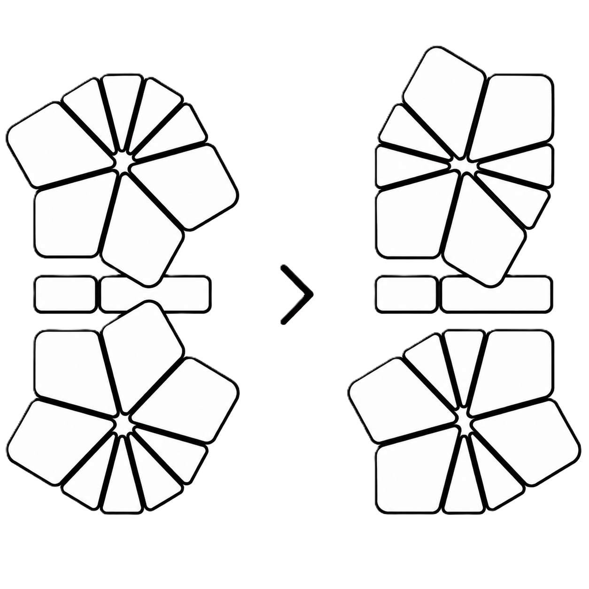
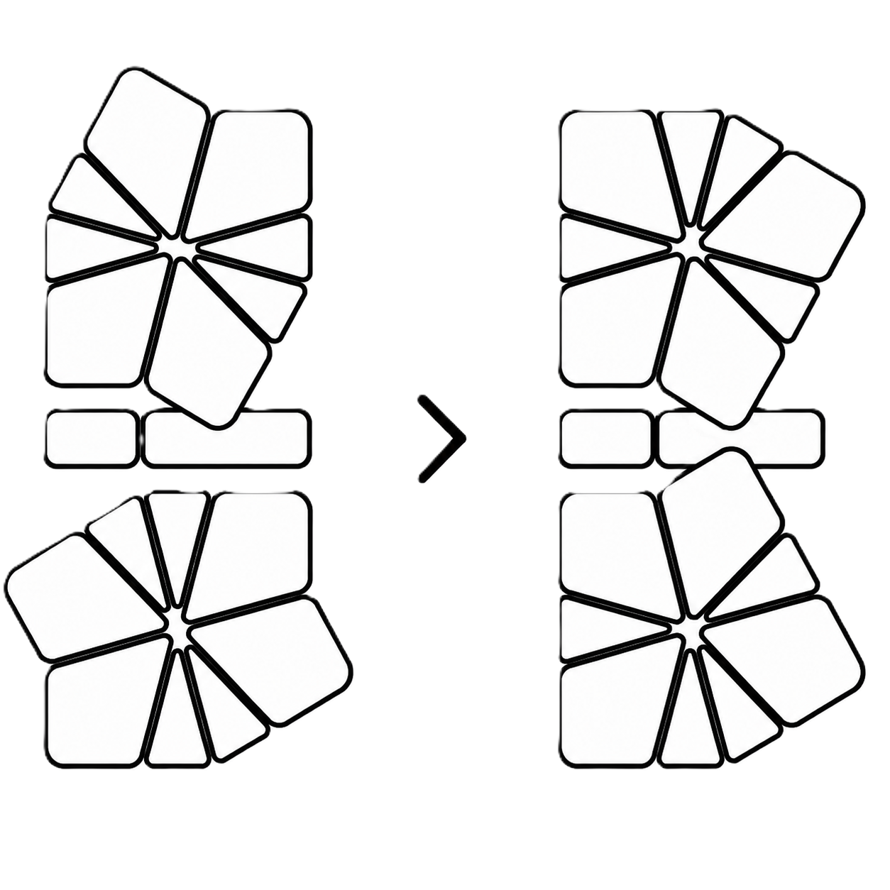
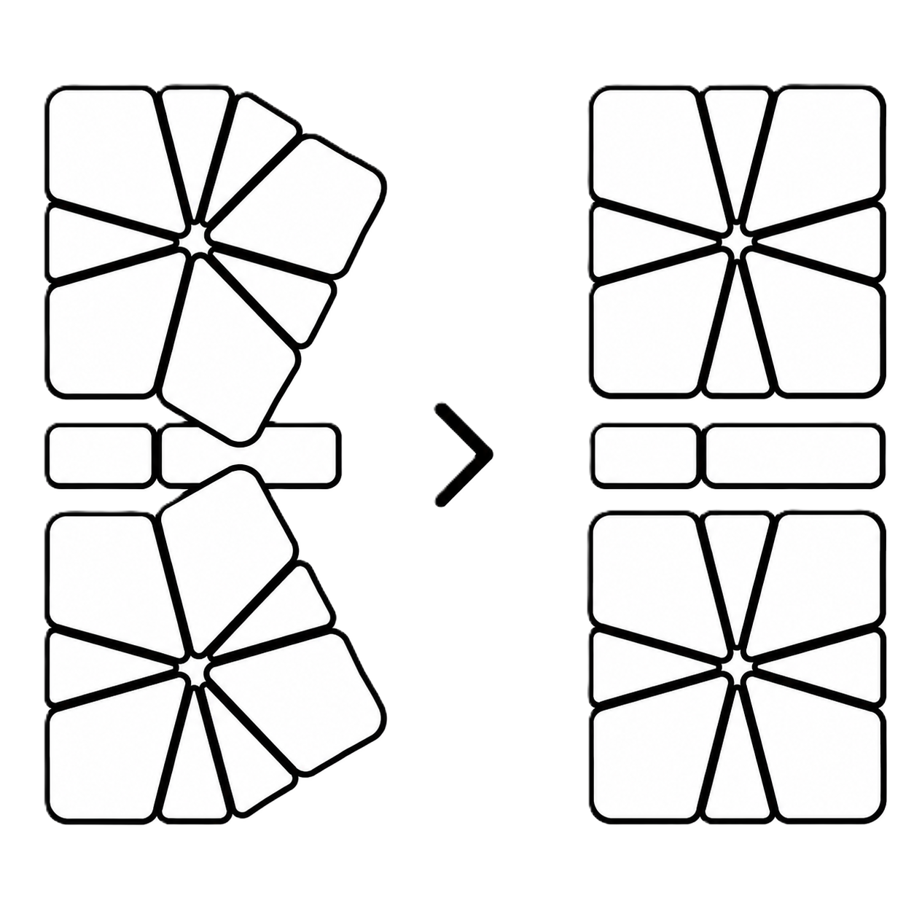
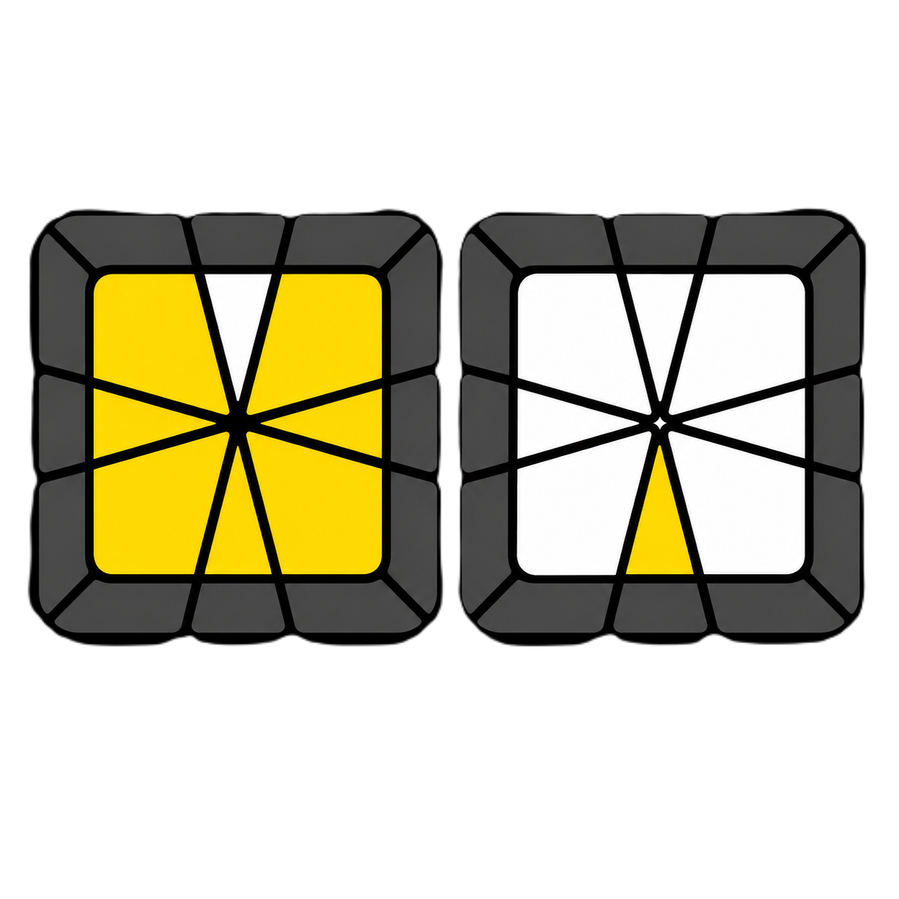
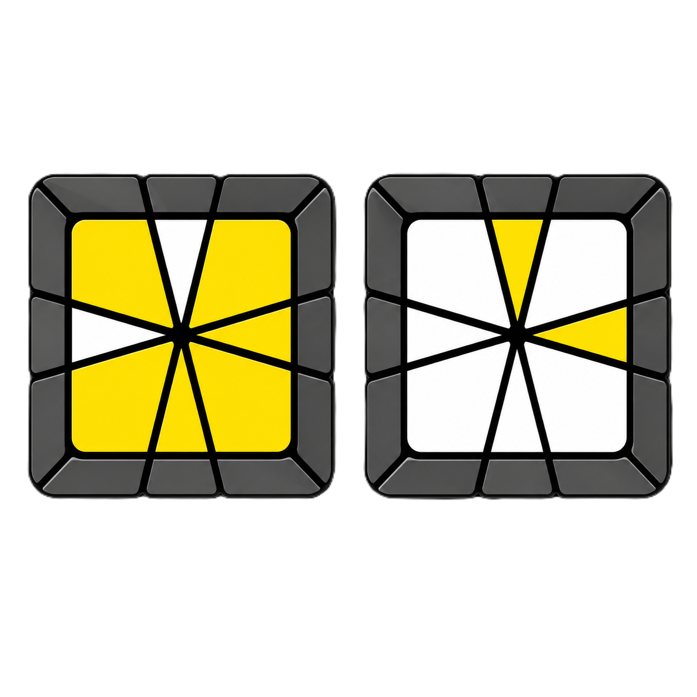
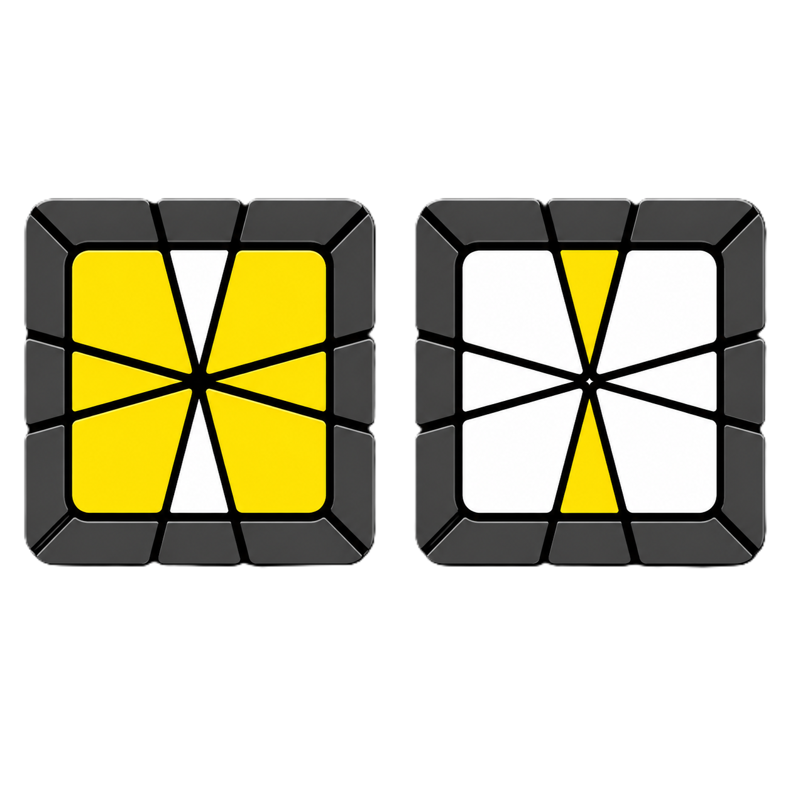
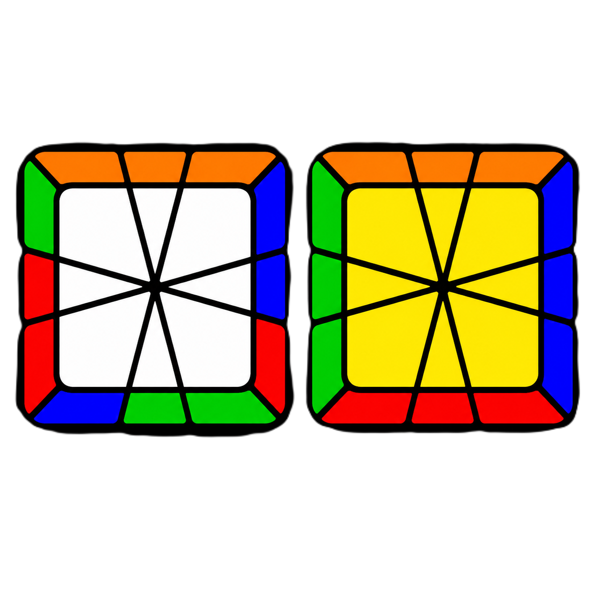
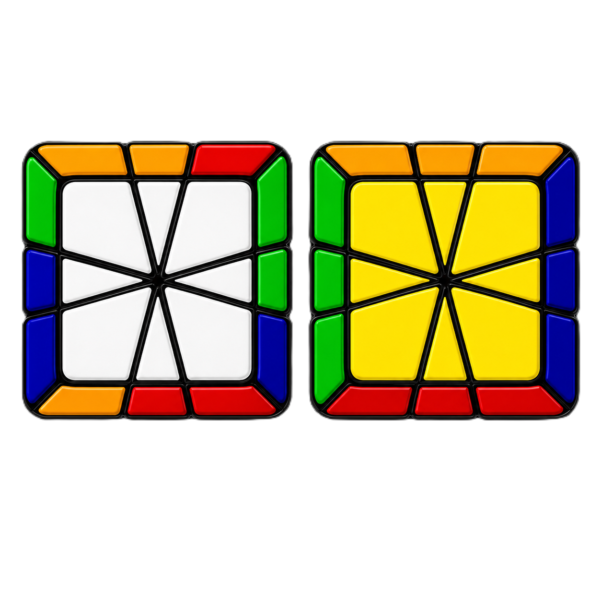
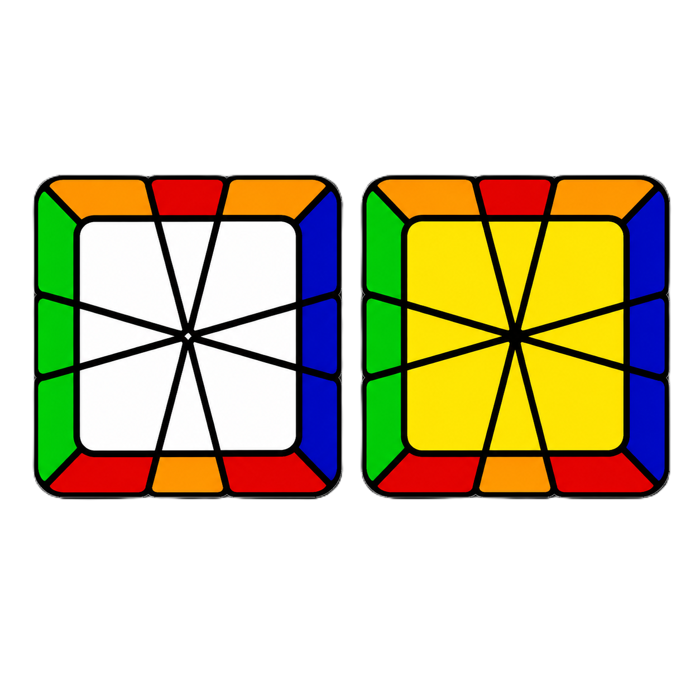
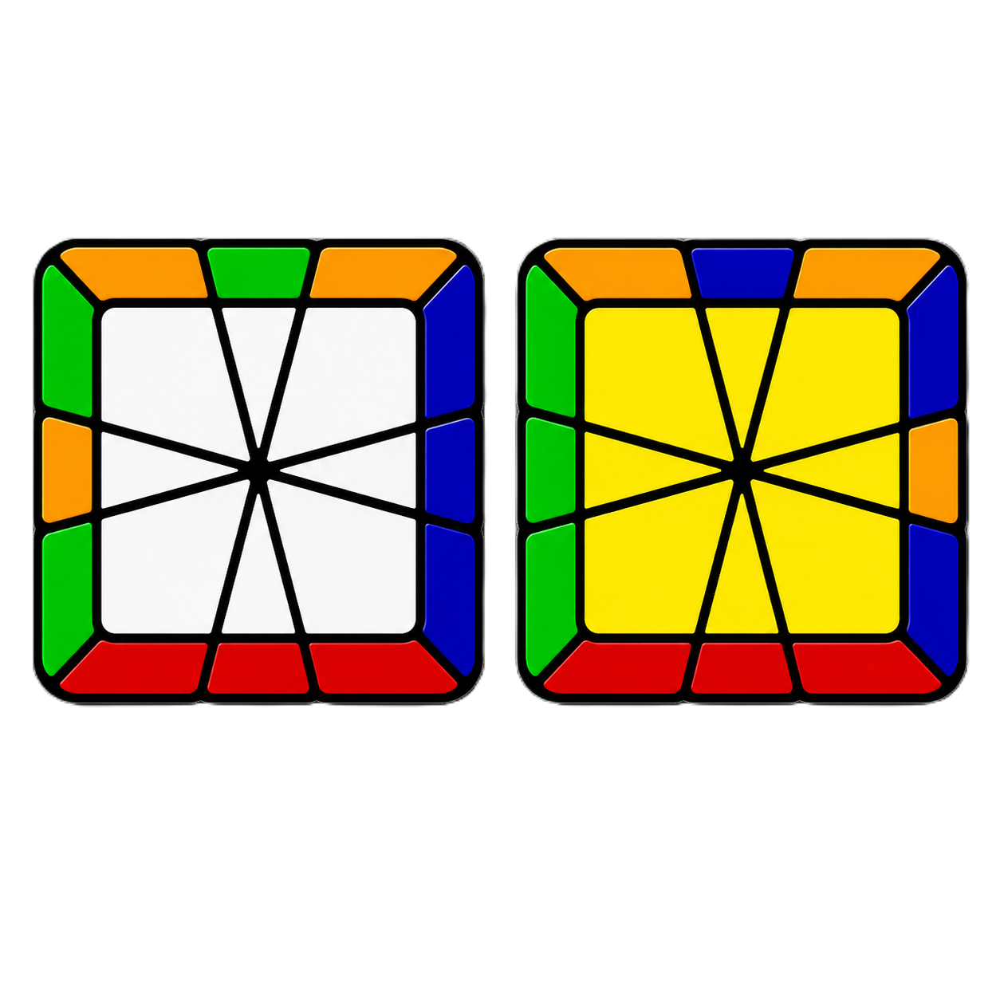

Step 1 — Cube Shape
The goal is to shape-shift the puzzle back into a square shape by reducing it through key intermediate shapes
- Group Edges
- Scallop → Barrel
- Barrel → Kite
- Kite → Cube Shape
Group all 8 small edge pieces together into even pairs to reach the Millennium Falcon shape or Scallop-Scallop (2 groups of 4 adjacent edges on top and bottom).

Align both scallops so the edges are on the same side, then slice (/)

Orient the top and bottom barrels 90° relative to each other and slice (/)

Align the seam through the middle of both kites and slice (/)
Step 2 — Corner Orientation
Crucial Rule: To keep the puzzle in cubic shape while moving pieces around, always misalign top or bottom layer by 1 notch before making vertical slice turns.
Pair up yellow corners 2-by-2, move them into position, and bring all 4 to the top layer.
Step 3 — Edge Orientation
Orient all top-color edges to the top layer and bottom-color edges to the bottom layer using standard edge swap algorithms.
- Single Edge Swap
- Double Edge Swap
- M2 Edge Swap

(0,-1)/(-3,0)/(4,1)/(-4,-1)/(3,0)/(0,-1)

(1,0)/(-3,0)/(-1,-1)/(4,1)/(-1,0)

(0,-1)/(1,1)/(-1,0)
Step 4 — Corner Permutation
Move all top and bottom corners into their correct positions relative to each other.
- Diagonal Swap
- Adjacent Swap

/(3,-3)/(3,0)/(-3,0)/(0,3)/(-3,0)/

/(3,3)/(-3,0)/(3,3)/(-3,0)/(3,3)/
Step 5 — Edge Permutation
Permute edges on both top and bottom layers simultaneously
- Opposite Swap
- Adjacent Swap
- Edge Parity (If 1 odd swap remains)

M2 U2 M2

(1,0)/(3,0)/(-1,-1)/(-2,1)/
/ (-3, 0) / (0, 3) / (0, -3) / (0, 3) / (2, 0) / (2, -2) / (-2, 0) / (4, 0) / (-2, 0) / (2, 0) / (-1, 4) / (0, -3) / (0, 3)